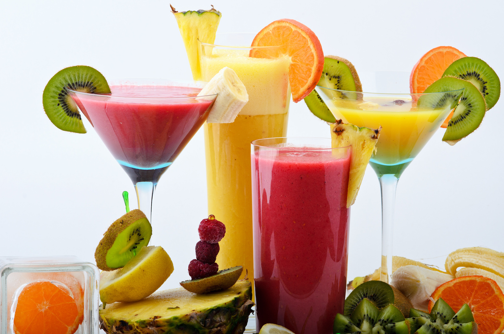
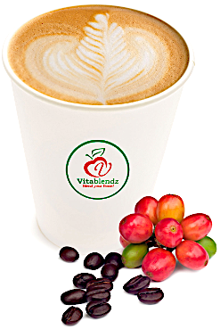

Ekte råvarer
Frozen yogurt og juicer bygges på naturlige frukter og bær — ikke smakstilsetning først.
Om oss
Vitablendz er en frozen yogurt- og smoothie/juicebar som serverer herlige, friske og velsmakende produkter med bedre helsegevinst.
Vi er lokalisert på Arkaden Torgterrassen, Klubbgata 5. Hit kommer du når du vil ha noe kaldt som faktisk gir noe tilbake — vitaminer, metthet og en pause fra handlegaten.
Logoens eple og blad er merkevaren i kortform: frukt først, så et grønt løft. Det røde eplet og det grønne bladet er fargene vi holder oss til — friskt, ikke tungt.


Det vi lover
Vi garanterer byens beste iskaffe og green tea latte. Latte med lúcuma, mocca med kraftig kakao, og matcha av ekte japansk grønn te. Kom og bedøm selv.
Slik vi jobber
Frozen yogurt og juicer bygges på naturlige frukter og bær — ikke smakstilsetning først.
Smoothie, juice og yogurt kan tilsettes supermatprodukter når du vil ha mer næring i samme glass.
Arkaden Torgterrassen gjør det enkelt å ta med et glass videre — eller sette seg ned et minutt.